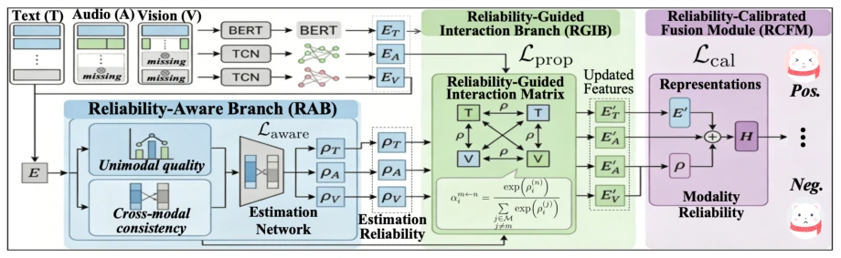
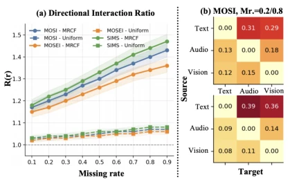
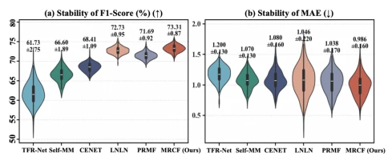

This paper prescribes a potent remedy for the 'working while compromised' status quo of Multimodal Sentiment Analysis (MSA). The authors keenly point out that existing methods, when modalities are missing, either guess blindly (reconstruction) or force fusion (joint representation), yet treat the core issue of 'which modality is more reliable' as implicit background noise. This is akin to letting a person with a lame leg command a person with full legs to run, where the result is often the lame leg leading the full legs astray. The MRCF framework attempts to explicitly model this 'reliability'; logically it is very compelling, and the experimental data is indeed impressive, setting new highs on datasets like CMU-MOSI. However, one must raise a critique that this practice of relying on 'complete observations' as training anchors (Anchor) raises a suspicious concern regarding whether it can maintain generalization in extreme missing scenarios (e.g., only one modality remains). After all, seeing a 'family portrait' during training but facing a 'single-parent family' during testing, could this calibration mechanism become an overfitting 'cheat code'? However, breaking out of the old frameworks of reconstruction and distillation to directly tackle 'trustworthiness' indeed serves as a reminder to the field: don't just think about how to complete data, first think about how to identify garbage data.
研究动机Motivation
多模态情感分析（MSA）旨在融合文本、音频和视觉来推断人类情感，但在现实应用中，传感器故障、遮挡或隐私限制常导致模态数据不完整（Zhang, Wang, and Yu 2024; Zhu et al. 2025）。现有处理不完整观测的方法主要分为两类：基于重建的方法（如 TFR-Net, Yuan et al. 2021; DAR, Yang et al. 2025）试图恢复缺失信息，以及基于联合表示的方法（如 CoKD, Li et al. 2024; LNLN, Zhang, Wang, and Yu 2024; P-RMF, Zhu et al. 2025）直接从残缺输入中学习。然而，这些方法通常将模态可靠性隐式地包含在表示学习或融合设计中，未将其作为样本特定的显式变量进行建模。论文指出，这种隐式处理导致两个关键问题：一是“可靠性不匹配”（Reliability Mismatch），即不同模态在不同缺失率下保留的情感证据差异巨大，且动态变化；二是“可靠性传播偏差”（Reliability Propagation Bias），即低质量模态的错误信息会通过跨模态交互污染高质量模态，导致性能下降。例如，图1分析显示，随着缺失率增加，最低可靠性的模态会动态切换，且移除该模态在特定阶段反而能提升性能，证明其存在负迁移。因此，亟需一种显式建模并校准模态可靠性的框架。
Multimodal Sentiment Analysis (MSA) aims to infer human emotions by fusing text, audio, and vision, but in real-world applications, sensor failures, occlusions, or privacy restrictions often lead to incomplete modality data (Zhang, Wang, and Yu 2024; Zhu et al. 2025). Existing methods for handling incomplete observations are mainly divided into two categories: reconstruction-based methods (e.g., TFR-Net, Yuan et al. 2021; DAR, Yang et al. 2025) attempt to recover missing information, and joint representation-based methods (e.g., CoKD, Li et al. 2024; LNLN, Zhang, Wang, and Yu 2024; P-RMF, Zhu et al. 2025) learn directly from incomplete inputs. However, these methods typically implicitly include modality reliability in representation learning or fusion design, without modeling it as a sample-specific explicit variable. The paper points out that this implicit processing leads to two key problems: first, 'Reliability Mismatch,' meaning the emotional evidence retained by different modalities varies greatly and changes dynamically under different missing rates; second, 'Reliability Propagation Bias,' meaning erroneous information from low-quality modalities contaminates high-quality modalities through cross-modal interaction, leading to performance degradation. For example, Figure 1 analysis shows that as the missing rate increases, the modality with the lowest reliability switches dynamically, and removing this modality actually improves performance at certain stages, proving the existence of negative transfer. Therefore, there is an urgent need for a framework that explicitly models and calibrates modality reliability.

Figure 2: Overview of MRCF. Given incomplete inputs, modality-specific encoders first extract unimodal features. The Reliability-Aware Branch estimates modality reliability using intramodal quality and cross-modal consistency cues. Guided by these scores, the Reliability-Guided Interaction Branch modulates cross-modal message passing according to estimated reliability. Finally, the Reliability-Calibrated Fusion Module integrates semantic and reliability cues for sentiment prediction. Paired complete observations are used only during training for proxy supervision and fusion calibration
The MRCF (Modality Reliability-Calibrated Framework) framework contains three core components, aiming to explicitly estimate and utilize modality reliability. First, after data features are extracted by modality-specific encoders, they enter the 'Reliability-Aware Branch (RAB).' This branch uses two clues to estimate sample-specific reliability: one is Intramodal Quality, combining features and observation ratio; the other is Cross-modal Semantic Consistency, evaluated by calculating the cosine similarity between the current modality and other modality representations. After these two clues are fused, they output the reliability score ρ through a nonlinear mapping. Second, it enters the 'Reliability-Guided Interaction Branch (RGIB).' This module uses the estimated reliability score to dynamically regulate cross-modal message passing. Specifically, it calculates the routing weight α of the source modality and adjusts the update amplitude (1-ρ) of the target modality, such that the update amplitude of high-reliability modalities is reduced (retaining own features), while low-reliability modalities absorb more information from high-reliability modalities, thereby suppressing the propagation of low-quality information. Finally, the 'Reliability-Calibrated Fusion Module (RCFM)' combines semantic features with reliability scores, calculates fusion weights β, and generates the final prediction. During training, this module uses semantic features of complete observations as anchors (Anchor), constrains the fusion representation of incomplete observations through calibration loss (Lcal), preventing excessive discarding of low-reliability but still useful complementary information. The entire framework is jointly optimized through task loss, reliability regression loss, propagation regularization loss, and calibration loss.
The paper conducted extensive experiments on three benchmark datasets: CMU-MOSI, CMU-MOSEI, and CH-SIMS, evaluating two scenarios: Intra-Modality Missing (IMM) and Fixed Modality Missing (FMM). In the IMM scenario, MRCF achieved the best or tied-best F1 scores on CMU-MOSI and CMU-MOSEI (73.31% and 80.27% respectively), significantly outperforming baselines such as P-RMF and LNLN. In the FMM scenario, even when the language modality is missing, MRCF maintains robustness, with an F1 score reaching 81.65%. Ablation studies show that removing the Reliability-Aware Branch or Interaction Branch leads to a significant performance drop, verifying the necessity of explicitly modeling reliability. Additionally, the impact of removing the Cross-modal Consistency clue is greater than removing the Intramodal Quality clue, indicating that semantic consistency is key. Visualization analysis shows that the reliability scores estimated by MRCF are highly positively correlated with prediction consistency, and the interaction mechanism indeed achieves directional information flow from high-reliability to low-reliability modalities. Statistical stability analysis also indicates that MRCF performs more stably under different missing rates and random seeds.

Figure 4: Reliability-guided cross-modal interaction. (a) In- teraction ratios across missing rates on three datasets. (b) CMU-MOSI routing at r = 0.2 and 0.8.

Figure 5: Statistical stability on MOSI. Plots show F1 and MAE distributions across missing rates and three seeds; box plots indicate the median and interquartile range (IQR).